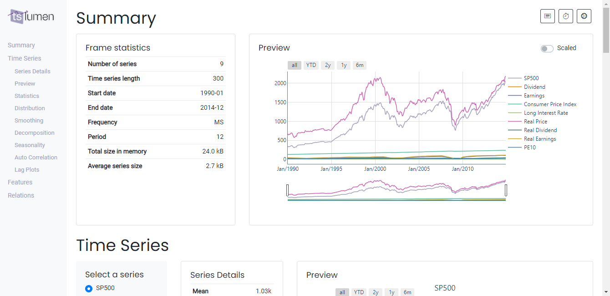

Interactive dashboard¶
[1]:
import tslumen
import pandas as pd
[3]:
df = pd.read_csv('https://datahub.io/core/s-and-p-500/r/data.csv', parse_dates=[0], index_col=0)
df = df[(df.index >= '1990-01-01') & (df.index < '2015-01-01')]
meta = {
'frame': {
'Description': '''S&P 500 index data including level, dividend, earnings and P/E ratio on
a monthly basis since 1870. The S&P 500 (Standard and Poor’s 500) is a free-float,
capitalization-weighted index of the top 500 publicly listed stocks in the US (top 500 by market cap)''',
'Source': '<a href="https://datahub.io/core/s-and-p-500">DataHub</a>',
},
'series': {
'SP500': "Level ('price') of the S&P 500 index",
'Dividend': 'Dividend',
'Earnings': 'Earnings',
'Consumer Price Index': 'Consumer Price Index',
'Long Interest Rate': '10 year interest rate (gov bonds)',
'Real Price': 'Real Price',
'Real Dividend': 'Real Dividend',
'Real Earnings': 'Real Earnings',
'PE10': 'Cyclically Adjusted Price Earnings Ratio P/E10 or CAPE',
}
}
[4]:
dashboard = tslumen.Dashboard(df, meta)
[5]:
dashboard.run_server(mode="inline", host="localhost", port='8000')
[5]:
